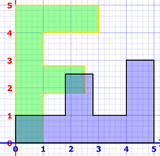
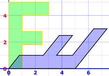
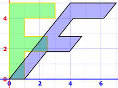
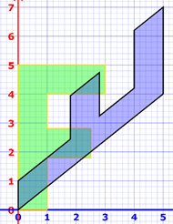
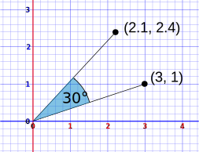

Transformations and Matrices
A matrix can do geometric transformations!
Have a play with this 2D transformation app:
Matrices can also transform from 3D to 2D (very useful for computer graphics), do 3D transformations and much much more.
The Mathematics
For each [x,y] point that makes up the shape we do this matrix multiplication:
When the transformation matrix [a,b,c,d] is the Identity Matrix (the matrix equivalent of "1") the [x,y] values are not changed:
Changing the "b" value leads to a "shear" transformation (try it above):
And this one will do a diagonal "flip" about the x=y line (try it also):
What more can you discover?
Many Transformations at Once
We can "chain" transformations by multiplying matrices.
Example: a diagonal flip followed by a horizontal shear:
Be careful! The transforms go right-to-left, so it is shear × flip = "flip then shear"
And we can then use that result in a transform:
It does these two transforms in one go:
 then 
Example: a horizontal shear followed by a diagonal flip:
Remember the order goes flip × shear = "shear then flip"
It is a different result!
It does these two transforms in one go:
 then 
This stuff is powerful as we can do LOTS of transforms at once and really speed up calculations. VERY useful for computer graphics.
But we have to be careful what order we do the transforms in!
It also shows us why the order of multiplying matrices is important (unlike ordinary numbers which can be mulitiplied in any order, example 2×3=3×2).
Transforms In Code
Need to code this yourself? Here is how.
The letter F is just a list of coordinates:
[3, 4], [3, 5], [0, 5], [0, 0], [1, 0], [1, 1.8], [2.5, 1.8], [2.5, 2.8], [1, 2.8], [1, 4]
And we loop through those points, making new points using the 2×2 matrix "a,b,c,d":
for (let i = 0; i < shape.pts.length; i++) {
let pt = shape.pts[i]
let x = a * pt[0] + b * pt[1]
let y = c * pt[0] + d * pt[1]
newPts.push({ x: x, y: y })
}
We then plot the original points and the transformed points so we can see both!
Rotation
This matrix does a rotation of θ about the origin (0,0):
Example: Rotate by 30°
Calculating to 4 decimal places:
Try it in the app at top!
And let's try it on a point here:
And we get this:

Footnote: Swapping Rows and Columns
Matrices are flexible!
This shear transformation:
Can be done like this:
The rows and columns are all swapped over (transposed), and the order of multiplication is reversed, but it still works. Just so you know.